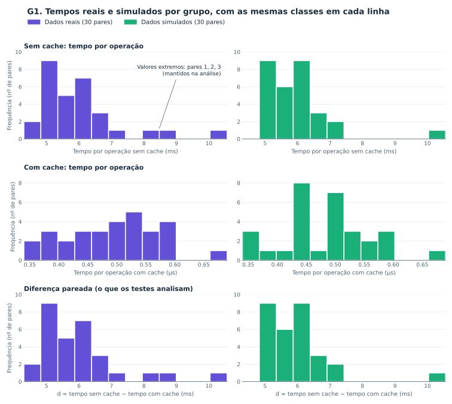

O que muda no tempo de execução quando usamos cache?
Um experimento pareado para comparar a mesma operação em duas condições: com cache e sem cache.
1.1
Cenário experimental
O cache permite reutilizar um resultado previamente armazenado. A comparação investiga se essa reutilização altera o tempo da operação, mantendo equivalentes a entrada, a tarefa e o ambiente de execução.
A
Sem cache
Abre o CSV e recalcula, por linguagem, a quantidade de repositórios e a soma de estrelas a cada repetição.
Tempo observado tsem
B
Com cache
Recupera da memória o mesmo resultado, já calculado antes do par. O preenchimento do cache é medido separadamente.
Tempo observado tcom
Variável independente
Uso do cache: com ou sem.
Variável dependente
Tempo médio por operação no lote, em milissegundos (ms).
Unidade de comparação
Um par de lotes sobre o mesmo CSV, com 20 operações por tratamento.
1.2
Como a comparação é feita
O cenário inicial utiliza o CSV de metadados dos 300 repositórios. O coletor salva uma cópia da entrada e verifica se os dois tratamentos retornam o mesmo resultado.
Amostra de tempos
30 pares 60 medições de lotes
Ordem balanceada
15 + 15 Metade começa com cache; metade sem cache
Aquecimento inicial
3 pares separados Fora da amostra principal
Preparar. Criar e preencher um cache novo antes de cada par, registrando esse custo fora dos tempos principais.
Medir. Executar os dois lotes na ordem embaralhada com semente 102. Dividir o tempo de cada lote por suas 20 operações.
Conferir. Comparar todas as respostas com a referência depois de parar o relógio. Preservar falhas e marcar pares inválidos.
Registrar. Salvar tempos, pares, aquecimentos e informações do ambiente em CSV e JSON.
O que esta comparação permite concluir?
O experimento mede reutilização de um resultado em memória para uma entrada fixa. Não mede chamadas de API, banco de dados ou cache frio.
Os 300 repositórios são registros da entrada, não 300 observações independentes de tempo.
As repetições de um lote não são amostras independentes. Os pares também compartilham entrada e ambiente; dependência temporal deve ser avaliada antes de aplicar testes.
O tempo com cache considera hits e exclui o preenchimento. Laços de execução, carga da máquina e coleta de lixo podem influenciar os tempos.
A semente reproduz a ordem dos tratamentos, não os tempos medidos. Não se removem erros ou valores extremos por conveniência.
A execução sem cache deve controlar o mecanismo estudado; não significa que todos os caches do sistema estejam desativados.
Configuração da coleta de 03/11/2026, executada localmente pela #102. Esta página é descritiva: não inicia coletas nem acompanha execuções em tempo real.
1.3
Pergunta de pesquisa
Reutilizar em memória a agregação do CSV por linguagem altera o tempo médio por operação, em comparação com recalcular essa agregação a cada execução?
Compare pares, não execuções desconectadas
Cada observação sem cache deve estar ligada à observação com cache da mesma tarefa e entrada. A ordem dos tratamentos precisa ser controlada para reduzir efeitos de aquecimento e variação do ambiente.
d = tsem − tcom
d > 0 Com cache foi mais rápido naquele par.
d = 0 Os tempos observados foram iguais.
d < 0 Com cache foi mais lento naquele par.
1.4
Hipóteses H0 e H1
Formulação proposta na #101, antes da coleta: bilateral, considerando tanto redução quanto aumento do tempo. A execução da #102 não confirma nem rejeita essas hipóteses.
H0
Hipótese nula
Não há diferença no tempo médio de execução entre as condições com e sem cache.
μd = 0
H1
Hipótese alternativa
Há diferença no tempo médio de execução entre as condições com e sem cache.
μd ≠ 0
μd representa a média populacional das diferenças pareadas. As expressões acima correspondem ao teste t pareado; não são resultados calculados.
Como essas hipóteses se relacionam ao Wilcoxon pareado?
O Wilcoxon signed-rank não testa diretamente igualdade de médias. Sua hipótese nula considera a distribuição das diferenças pareadas simétrica em torno de zero; a alternativa bilateral admite deslocamento do centro para qualquer direção, sob os pressupostos do teste.
Por isso, uma implementação não deve apenas trocar o nome do teste e manter a interpretação em termos de médias. Pressupostos, diferenças nulas e empates precisam ser tratados na análise estatística.
Sem cache, os tempos reais são assimétricos à direita (coeficiente de assimetria 1,94), com mediana de 5,62 ms e máximo de 10,56 ms; os valores extremos são os pares 1, 2, 3, os primeiros da coleta. Com cache, os tempos ficam perto de 0,49 µs, cerca de 11.000 vezes menores, e quase simétricos (0,08). Como os dados não parecem normais, a simulação não impõe uma distribuição: sorteia pares observados completos, com reposição, mantendo 15 pares por ordem de execução e semente 104; por isso a mediana simulada fica próxima (5,65 ms), mas os valores só repetem os observados. A diferença d, que os testes analisam, tem quase a mesma forma do tempo sem cache, porque o tempo com cache é desprezível perto dele.

Ver os valores em tabela
Série
Origem
n
Média
Mediana
Desvio padrão
Mínimo
Máximo
Assimetria
Extremos
Sem cache (ms)
Real
30
6,00
5,62
1,32
4,31
10,56
1,94
3
Sem cache (ms)
Simulado
30
5,93
5,65
1,08
4,90
10,56
2,93
1
Com cache (µs)
Real
30
0,49
0,49
0,08
0,34
0,69
0,08
0
Com cache (µs)
Simulado
30
0,48
0,49
0,08
0,34
0,69
0,32
2
Diferença d = sem − com (ms)
Real
30
6,00
5,62
1,32
4,31
10,56
1,94
3
Diferença d = sem − com (ms)
Simulado
30
5,92
5,65
1,08
4,90
10,56
2,93
1
Extremos: valores fora das cercas de 1,5 × IQR, todos mantidos. Dados: entregas/experimento-cache/RQ107/dados_visualizacao.json.
3
Como os testes funcionam
G2 — Distribuição da estatística de cada teste quando H0 é verdadeira
Amostra de exemplo:
t pareado
Wilcoxon pareado
Região de rejeição (α = 0,05, bilateral)
Área do p-valor (cor do teste)
Estatística observada
t pareado: distribuição t de StudentWilcoxon pareado: distribuição exata de W+
Teste
Estatística observada
Região de rejeição
p-valor
Decisão
A amostra “H0 verdadeira” troca ao acaso os rótulos com/sem cache de cada par (RQ104), então o rótulo não tem efeito. A distribuição de W+ é exata, por permutação dos sinais, condicionada aos postos da amostra (com postos médios quando há empates). Estatísticas e p-valores vêm da RQ105; dados gerados por codigo-fonte/analise/rq106_dados_g2.py.
4
G3 — Erro Tipo I
SIMULAÇÃO · H0 verdadeira por construção
Quando H0 é verdadeira, quantas vezes os testes apontam uma diferença? Cada barra resume 10.000 experimentos simulados de 30 pares, com semente 110.
Linha tracejada: referência de 5%. Hastes: intervalo de confiança de 95% da taxa estimada.
G3 — Comparação dos testes sob H0
Teste
Rejeições / repetições
Erro Tipo I
IC 95%
Diferença de 5%
t pareado
544 / 10000
5,44%
5,0035% a 5,9027%
+0,44 p.p.
Wilcoxon pareado
526 / 10000
5,26%
4,8306% a 5,7157%
+0,26 p.p.
p.p. = pontos percentuais. O gráfico estima falsos positivos sob H0; os resultados reais respondem a outra pergunta: o que foi observado na coleta?
Como interpretar este gráfico?
Erro Tipo I é rejeitar H0 quando ela é verdadeira. A referência de 5% é o nível nominal de cada teste; a taxa simulada pode variar. Estar mais perto da linha nesta execução não demonstra que um teste seja sempre melhor.
Os intervalos binomiais exatos quantificam a incerteza Monte Carlo. Não representam a dispersão dos tempos nem o poder estatístico dos testes. As simulações não são novas medições reais.
t pareado: o IC 95% não contém a referência de 5%. Wilcoxon pareado: o IC 95% contém a referência de 5%. A tabela mantém quatro casas decimais para não esconder diferenças pelo arredondamento.
Fonte: simulação Q1 da #110, com H0 construída por trocas aleatórias dos rótulos. Resultados estáticos da execução salva; o gráfico não executa novas simulações.
5
G4 — Poder
SIMULAÇÃO · efeito conhecido somado às diferenças
Cada ponto é a proporção de 10.000 amostras simuladas em que o teste rejeitou H0; no efeito zero, essa proporção é o erro tipo I, e a partir dele é o poder. Com as diferenças reais simetrizadas (base, 30 pares), o Wilcoxon pareado detecta melhor: 80% de poder exige dz ≈ 0,53 no t e ≈ 0,45 no Wilcoxon, porque os extremos reais inflam o desvio padrão usado pelo t. A vantagem do Wilcoxon cresce com outliers (até 26,3 p.p.) e muda de lado na assimetria: ali o t tem mais poder (até 20,7 p.p.), e o Wilcoxon rejeita 21,8% das amostras sem efeito na média, porque testa a simetria (mediana), não a média; com 10 pares, os dois perdem poder (79,4% e 80,1% em dz = 1).
t pareado
Wilcoxon pareado
Linha fina tracejada: mesmo teste com α = 0,01
Referências de 5% (erro tipo I) e 80% (poder usual)
Base (30 pares) · Q2 Nenhuma: variação real das diferenças, simetrizada em torno de zeroAmostra pequena (10 pares) · Q3 N = 10: o t depende mais da normalidade; o Wilcoxon fica mais discretoOutliers (10% × 5) · Q3 Cauda pesada: 10% das diferenças com magnitude 5 vezes maiorAssimetria real (média zero) · Q3 Diferenças assimétricas: H0 do t vale, a simetria do Wilcoxon não
Eixo vertical: proporção de amostras com p < α (%). Passe o mouse sobre um ponto para ver o valor, o IC 95% e o δ em ms. dz = δ / σd, o deslocamento somado às diferenças em desvios padrão.
G4 — Resumo por cenário (α = 0,05)
Cenário
Erro tipo I (t / Wilcoxon)
dz para 80% de poder (t / Wilcoxon)
Quem detecta melhor
Base (30 pares)
4,5% (conservador) / 4,9% (perto do nominal)
0,53 / 0,45
Wilcoxon pareado (até 14,5 p.p.)
Amostra pequena (10 pares)
3,8% (conservador) / 4,6% (conservador)
> 1 / 1,00
Wilcoxon pareado (até 3,2 p.p.)
Outliers (10% × 5)
3,6% (conservador) / 4,8% (perto do nominal)
0,47 / 0,30
Wilcoxon pareado (até 26,3 p.p.)
Assimetria real (média zero)
8,0% (liberal) / 21,8% (liberal)
0,48 / 0,54
t pareado (até 20,7 p.p.)
Como os cenários foram construídos?
Todos reamostram os 30 pares reais. Na base, cada diferença é centrada na média real e recebe um sinal sorteado: a variação observada é mantida e H0 vale para os dois testes. Outliers: 10% das diferenças com magnitude 5 vezes maior. Amostra pequena: 10 pares. Assimetria: diferenças centradas sem sortear o sinal, com a assimetria real (≈ 1,9).
A base não usa a troca de rótulos da Q1 (G3), que gera diferenças bimodais de ±6 ms; nessa forma um deslocamento mínimo reordena todos os postos e a curva do Wilcoxon ganha degraus artificiais. Por isso o ponto dz = 0 do G4 é próximo do G3, mas não igual.
Com α = 0,01 (linhas tracejadas) as curvas descem: há menos falsos positivos, mas é preciso um efeito maior para chegar ao mesmo poder.
Fonte: simulações Q2/Q3 da #113, semente 113, 10.000 amostras por ponto. Resultados estáticos da execução salva; o gráfico não refaz as simulações.
6
Resultados reais
COLETA REAL · Mesma operação e entrada
Resultados dos 30 pares medidos na coleta local. Aqui são usados os dados reais, não as amostras simuladas do G3. Diferença: tempo sem cache − tempo com cache.
Tempo médio sem cache
6,000103 ms
Tempo médio com cache
0,000491 ms
Diferença média
5,999611 ms
Ambos os testes rejeitam H0 a α = 0,05. O tempo médio observado com cache foi menor. Essa leitura depende dos pressupostos descritos abaixo e não demonstra ganho universal.
Testes bilaterais · α = 0,05 · tempos por operação no lote
Teste
Estatística
p-valor
Tamanho de efeito
Decisão
t pareado
t(29) = 24,927
3,89e-21
Cohen dz = 4,551
Rejeita H0
Wilcoxon pareado
W+ = 465,0
1,86e-09
r rank-biserial = 1,000
Rejeita H0
Notação: e−21 significa × 10⁻²¹. O p-valor não é a probabilidade de H0 ser verdadeira. Os dois tamanhos de efeito usam escalas diferentes e não devem ser comparados numericamente entre si.
Magnitude e incerteza
IC 95% da diferença média: 5,507 a 6,492 ms. Mediana das diferenças: 5,623 ms. Estimador de Hodges–Lehmann: 5,735 ms.
Diferenças positivas indicam menor tempo com cache. O intervalo da média depende dos pressupostos do teste t; não é um intervalo do tamanho de efeito nem do estimador de Hodges–Lehmann.
Como ler os testes e os tamanhos de efeito?
O teste t avalia a média das diferenças. Cohen dz divide essa média pelo desvio padrão das diferenças. O Wilcoxon avalia os postos das diferenças sob a hipótese de simetria em zero; W+ soma os postos positivos. Seu efeito rank-biserial varia de −1 a 1.
Wilcoxon: método exato (permutação dos sinais); 30 diferenças não nulas e 0 zeros descartados. W+ não deve ser confundido com min(W+, W−), usado por algumas bibliotecas.
Rejeitar H0 indica evidência segundo o modelo do teste, não ganho universal. Não rejeitar H0 não demonstra equivalência.
Origem: coleta 20261103T213612Z_ebe7be6978. Validação da #103 e testes da #105. Resultados estáticos; atualização pelo comando do dashboard.